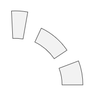

Главная → Уровень сегментов
Сегментный уровень – совокупность сегментов, объединенных для совместного управления и анимации. (рис. 1).

Рис. 1 - Уровень сегментов
Для создания объекта типа SegmentLevel необходимо подключить следующие скрипты:
Для создания объекта в функцию-конструктор передаются основные параметры:
id - идентификатор сегмента в виде текстовой строки.
context - контекст типа CanvasRenderingContext2D для отрисовки сегмента.
cx - координата X центра сегментного уровня.
cy - координата Y центра сегментного уровня.
r_in - условный внутренний радиус. Радиусы сегментов одного уровня могут быть разными.
Примеры использования различных свойств и методов объекта.
visible - видимость. Значение true обеспечивает видимость объекта.
segments_visible - видимость сегментов.
in_progress - в процессе. Флаг принимает значение true в процессе анимации уровня сегментов.
addSegment(segment) - добавляет segment в список сегментов уровня.
removeSegment(segment) - удаляет segment из списка сегментов уровня.
build - используется, когда нужно запустить событие segment-level-changed для отрисовки сегментов уровня.
draw() - функция отрисовки уровня. Вызывает метод .draw() для каждого объекта из списка сегментов уровня.
instanceCopy() - создание независимой копии объекта.
Анимация уровня - это различные изменения формы, положения или стиля оформления сегментов уровня со временем.
Основные параметры анимации:
duration - длительность анимации. Задается в секундах.
delay - задержка перед началом анимации. Задается в секундах.
direction - направление анимации. Набор допустимых значений зависит от вида анимации.
order - порядок анимации. Допустимые значения:"together" - вместе. "one-by-one-clockwise" - один за другим по часовой стрелке.
"one-by-one-anticlockwise" - один за другим против часовой стрелки.
Для поочередной анимации длительность duration будет разделена равномерно между сегментами уровня с учетом задержки между анимацией сегментов.lag - задержка между анимацией сегментов уровня. Задается в секундах.
appear(direction, duration, delay) - появление сегментов уровня за счет постепенного изменения их формы.
Допустимые значения параметра direction для метода анимации появления:
"from-center" - от центра сегмента.
"to-center" - к центру сегмента.
"from-axis" - от оси сегмента.
"clockwise" - по часовой стрелке.
"anticlockwise" - против часовой стрелки.
Если все сегменты уровня появились, то запускается событие segment-level-appeared.disappear(direction, duration, delay) - исчезание сегментов уровня за счет постепенного изменения их формы.
Допустимые значения параметра direction для метода анимации исчезания:
"from-center" - от центра сегмента.
"to-center" - к центру сегмента.
"to-axis" - к оси сегмента.
"clockwise" - по часовой стрелке.
"anticlockwise" - против часовой стрелки.
Если все сегменты уровня исчезли, то запускается событие segment-level-disappeared.rotate(order, lag, direction, angle, duration, delay) - вращение сегментов уровня.
Угол поворота angle задается в градусах.
Допустимые значения параметра direction для метода анимации вращения:
"clockwise" - по часовой стрелке.
"anticlockwise" - против часовой стрелки.
Если все сегменты уровня повернуты, то запускается событие segment-level-rotated.fadeIn(order, lag, duration, delay) - появление сегментов уровня за счет постепенного изменения их прозрачности.
Если все сегменты уровня выцвели, то запускается событие segment-level-faded-in.
fadeOut(order, lag, duration, delay) - исчезание сегментов уровня за счет постепенного изменения их прозрачности.
Если все сегменты уровня выцвели, то запускается событие segment-level-faded-out.
События, запускаемые объектом SegmentLevel, реализованы с помощью CustomEvent.
В параметре detail.level передается ссылка на сам объект.
segment-level-appeared - все сегменты уровня появились.
segment-level-disappeared - все сегменты уровня исчезли.
segment-level-rotated - все сегменты уровня повернуты.
segment-level-faded-in - все сегменты уровня появились выцветанием.
segment-level-faded-out - все сегменты уровня исчезли выцветанием.
Главная → Уровень сегментов